来源：https://kkehvdiodf.feishu.cn/docx/LONfdkRWno18fHxzfwScZMrAnJc
这篇文章，严格来说，这是一篇参会感悟，或者说参会思考，思考感受这次参会给我本人带来的价值。
我在想，如果我把这些价值分享出来，是不是可以让没有参会的大家也能获得一些什么？
文章是在9月写的，写的时间已经距离品牌节，过去一个月了，热乎劲都过了，我想，我应该是最后写相关内容的人吧？（惭愧）
不过好在这并不影响我想要表达东西，我想让文章在尽量脱离大会现场的基础上，让没有参与过品牌节的大家，感受到我感受到的价值和思考。
过程中会用到各位老师的部分PPT，如有不适当的地方，请联系我第一时间删除修正。
另外到场的嘉宾大咖都在下图了，具体的细节咱们不再这篇文章详细讲了。
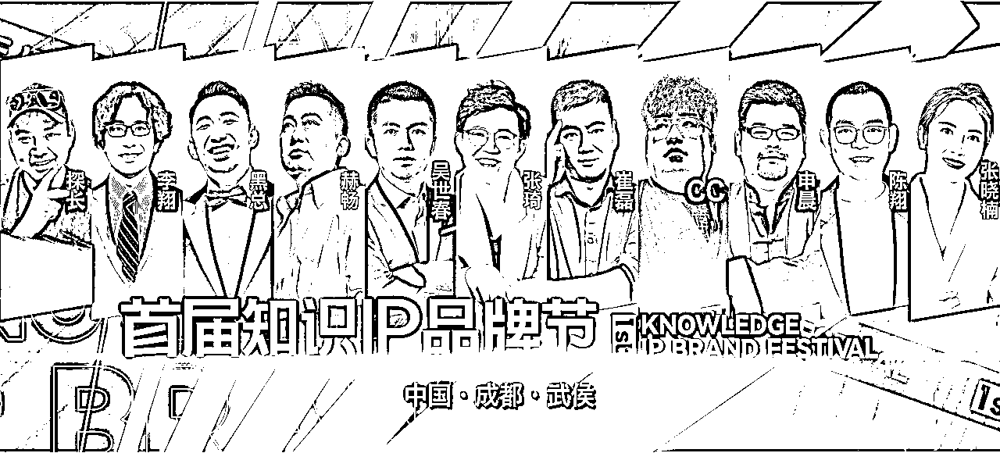
进入正文前，老规矩，先感谢（安利）。
感谢生财有术的平台，给我提供了这次参与的机会。
感谢生财有术，带着大家一起生财有术。
感谢这次品牌节的赞助商之一，我的朋友/我的微信私域管理软件供应商，黑小喵，和他的团队，堆雪球。
我见过的私域管理最好用的软件，没有之一。
做个预言，将来做私域行业的不会没有听说过堆雪球的产品，因为微信规则下，不正规产品必将淘汰，优质的产品才能长青。
细节我就不安利了，感兴趣的私域老板们可以自行去了解。大家在生财@黑小喵 就好。
对于这次的IP品牌节，我看群里的评价褒贬不一，有说颇有收获的，也有说IP老师的咖位都不错，但是没有干货，尤其是听过老师单独小场讲解的，觉得老师没有拿出实力来讲。
我觉得大家说的其实没毛病，也很理解，这样的大场，如果足够干，时间上估计就要3天起。
也许是期待太高的原因，我自己其实在听的时候也是有这种感觉的，有些水。
但是回来以后仔细回味，我发现每个老师都在试图“藏私”的情况，又抱着真诚分享的态度，试图给我们讲清楚IP创业过程中的至少一个或多个“核心价值点”。
我个人认为，把这些听懂了，融会贯通了，悟透了，就值回票价了。
就好像武林大会，武当掌门，少林掌门，都出来给大家拆解一个高招，那就够了，这种场肯定不能给你来一套镇派秘籍把？
如果真想深度学习，我们去尝试链接老师就是了，毕竟都是知识付费相关的老师，不难链接。
好，别的不多说，那既然是一招半式，那么去掉介绍和暖场，总结起来应该也不长，我就尝试根据我的理解给大家拆解下，看看能不能让大家感受到，我感受到的价值。
一来自己也复习一遍，二来给没有参加的朋友分享一些收获。
下面，我用五个部分，来讲下我对五位老师分享内容的理解，分别是：
如果有说的不对的地方，请狠狠的喷，我来学习改正。
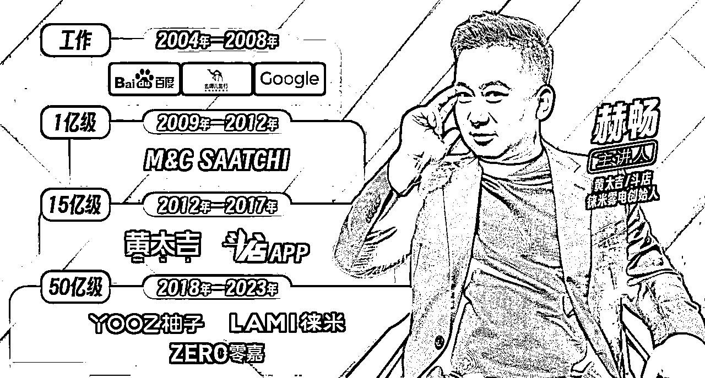
一张图，赫畅老师的履历一目了然，上百度词条的老师，我这边就不多介绍了，有兴趣大家去搜就是。
赫畅老师的整个分享，在我的理解里，讲了3个核心认知。
拿自己经历讲：创业成功/失败皆可知识付费
拿星链案例来讲：人物品牌营销的价值。
拿行业相关数据来讲：知识IP打造正当时。
大意是讲，做为多个公司的创始人，在每个公司经历的成功或者失败的原因。
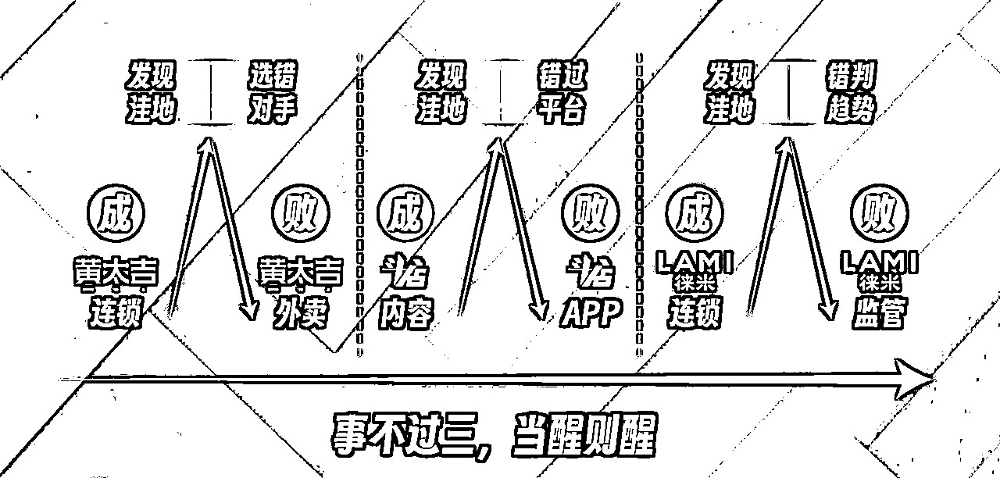
而每次失败，都是靠知识付费重启的的。
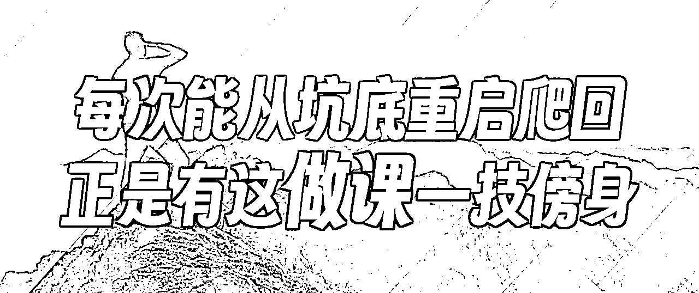
每次创业，每个公司，他都遇到了大量的问题，投入了大量的思考和精力。
而最终，无论成败，这些都可以成为未来的自己或他人，下次启程的燃料和经验。
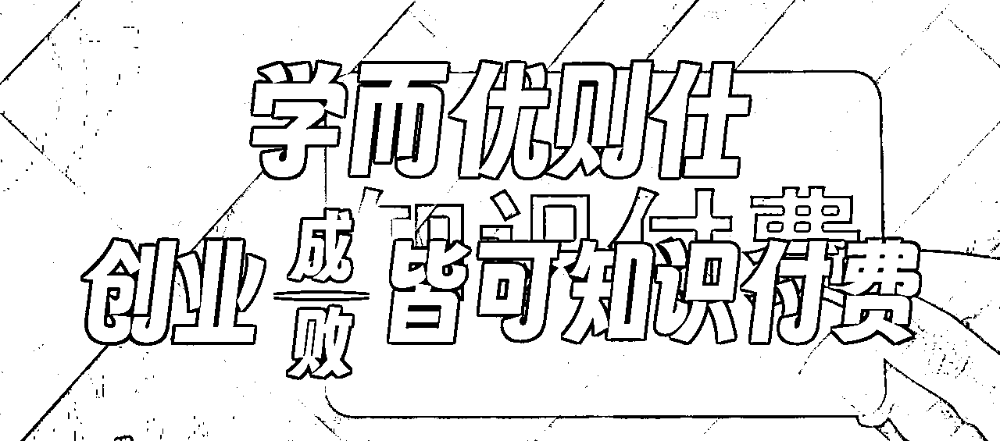
这里我不再重复老师的描述了，我只讲讲我的理解。
这次参加完IP大会我发了一个朋友圈，这句话原话是赫畅老师的，我稍微加了一些改动。
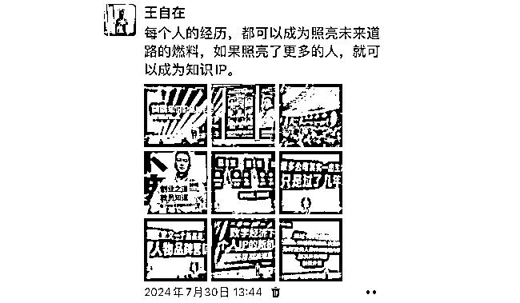
看到这句话，相信有过同类经历的朋友都会有相当的感触。
当时让我想起了多年前给我感触很大的一部印度电影《贫民窟的百万富翁》。
讲的就是，我们以往的经历必然会给我们未来的人生，带来相应的价值。
没看过的朋友建议去看下。
每个人的人生都是不同的，但是正所谓天下没有新鲜事，每类人的经历又都是趋同的。
你的创业经历，你学习一样技能的经历，甚至是你上班职场的经历，如果你善于提炼/总结/萃取，就会形成你独特的经验，这就是一种知识，这种知识必然会对你的未来造成极大的帮助。
如果这些帮助放大到了身边的朋友，那么你不就成为了知识IP么？
如果你把这些体系化，更方便的帮助更多的陌生人，那不就是一个具备影响力的知识IP么？
比如我参加品牌节的经历和思考，一样也可以形成这篇文章，分享我获得的知识给大家形成价值。
比如我把做电商培训员工时的内容做成了课程。
比如我把小红书聚光投放的经验做成了课程。
比如我把我们团队搭建私域的内容和话术做成了在线学习资料。
有些内容虽然我没有收费，但是我收获了价值，收获了粉丝，朋友，学员对我的认可。
正所谓，只要贡献价值，必然获得收益。
最后，分享下赫畅老师很接地气的回答为什么要做知识付费。
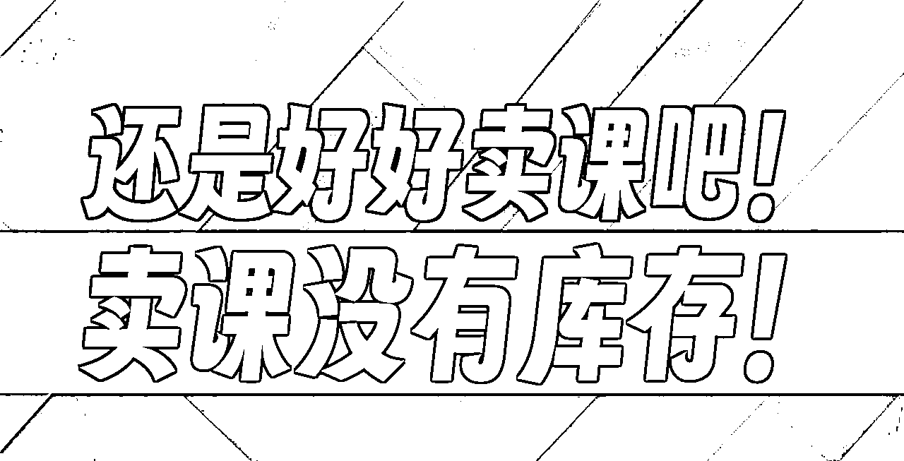
赫畅老师讲完的第一部分，其实第二部分就偏向于广告了，给星链做的广告。
虽然是广告，但是赫畅老师可不会硬推销，他从人物品牌营销的价值，和相关成功案例着手，讲述的星链的价值。
这里我们跳过广告和案例的环节，结合老师的PPT，讲下我认为老师希望给大家传递的价值。
当下很多老板都想出来做IP，大到360的红衣大叔，小到我这种名不见经传，公司年营收不足千万的小人物，都想通过互联网做点流量出来，来进一步扩大自己的影响力。
比如：
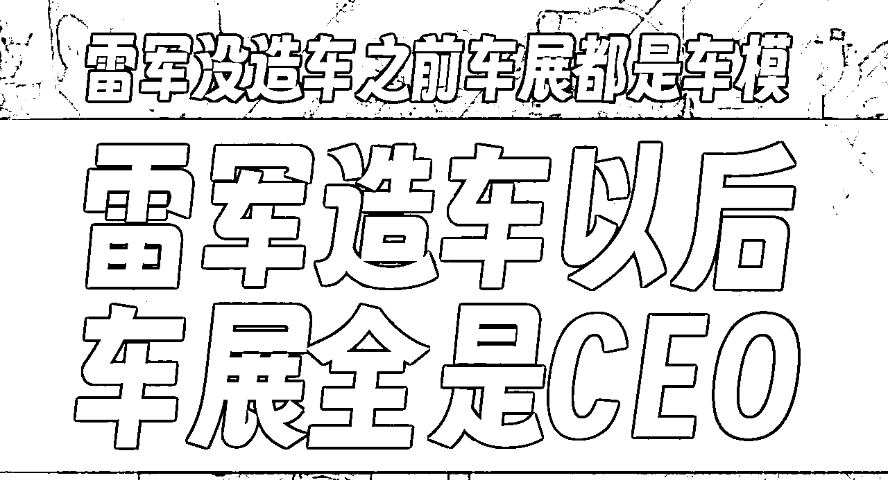
这个影响力，就是人物品牌价值。
正好这次大会无意中还遇到买红衣大叔迈巴赫的诸会长，还合了个影。
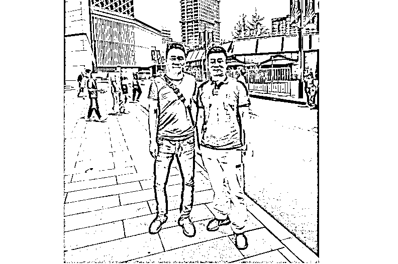
试想下，如果诸会长没有买迈巴赫，没有后续做营销造成的关注和影响，就不会有影响力，那么他二手车卖的再好，我也不会找他合影，就是算合影也不用排队，就算合影了，排队了我也不会觉得需要发到文章里来。
所以赫畅老师说：创始人做IP的目的，就是要提升行业能见度。
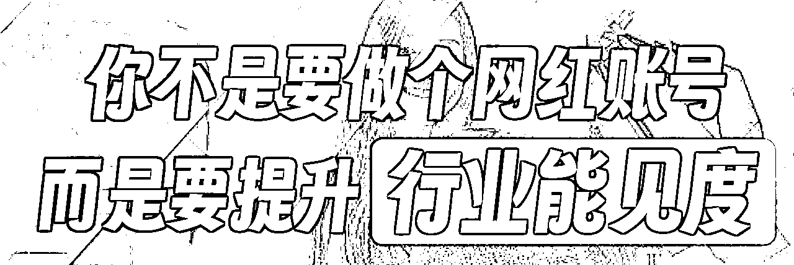
我理解为，看见了，即影响了。
就像抖音安老师说的，数据即神权，影响力即是权力。
对粉丝的影响力，对用户的影响力，对客户的影响力，对员工的影响力，对看到的人的影响力，都是权力，互联网让我们人人都获得了拥有权力的机会。
人类天生对权力是趋向的，是有天然动能的，创业者，创始人更是，而创始人IP，就是获取其的一件极其有效的工具。
就像《冰与火之歌》中龙妈的头衔一样：
“风暴降生丹妮莉丝·坦格利安，不焚者，弥林女王，安达尔人、洛伊拿人和先民的女王，七国统治者，全境守护者，大草海的卡丽熙，镣铐破除者，龙石岛公主，银发女王，龙之母”
长吗？不长，至少龙妈不觉得长，单单这个头衔，就代表了对十数个不同领域粉丝的影响力，整体代表了龙妈的影响力范畴，靠这些就能拿到很多别人拿不到的资源，看过的可以回想下，龙妈每次获得新的资源是不是都是头衔中的价值带来的？这些有时间比钱好用太多。
这一点我个人是深深体会到到的，比如我再某个地方公开讲了课，产生了点影响力，然后带着这个价值去对接资源时，只要不损失别人的利润，几乎都是免费的。
在各个行业圈子内，很多情况下的资源，会回归到以物换物的形态。
而创始人IP代表的价值，和其所带动的势能，就是其中之一。
而星链，就是帮助创始人形成品牌价值的产品。
嗯，顺着，顺着，顺出了安利的味儿了。
（纯粹是比较认可老师分享的内容，并非推荐产品，我本人也并没有使用过星链的产品，希望大家理性阅读，多调研，不要盲目使用任何文章体现的产品）
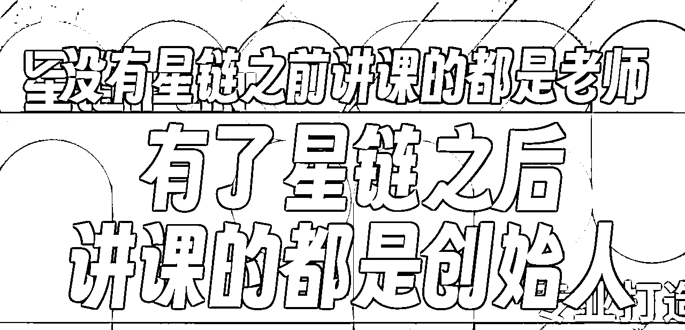
对，知识IP打造，正当时。
知识IP打造这件事情，在第一个认知里我们已经拆解过了。
这里，赫畅老师主要讲的是，正当时。
细节数据我们就不展示了，总结就是：优秀的知识产品，将会是符合当下中国国情，带动文化教育产业的一个极大的市场。
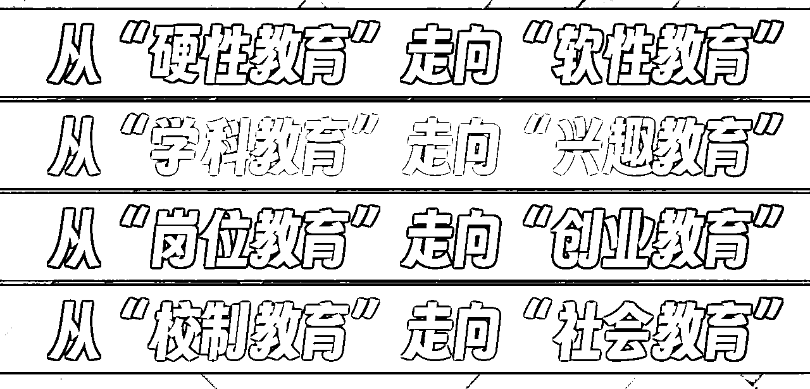
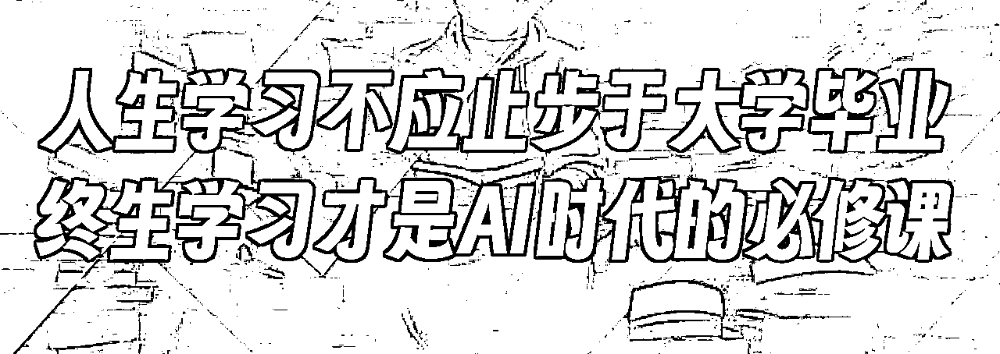
何为正当时？
我的理解是，可以产生价值，且社会环境需要，所谓趋势所向，就是。
只要大家认可终身学习的理念，那么在这样环境下，就是正当时。
每个人有价值的经历，都可以成为自己和他人进步燃料的时代，就是知识IP的，正当时。
从个人经历到创业成败皆可知识付费。
从星链案例到人物品牌营销的价值。
从行业数据分析，到知识IP打造正当时。
赫畅老师讲的很好，但是我觉得还有一个分享里没说明的隐藏大招。
这样的演讲布局，让我想起了之前阅读的一篇文章里的教学机缘说，这个隐藏大招，我们就从这个教学机缘说起。
我常看的一个公众号，叫记忆承载，作者风叔在一篇文章说了一个故事，故事原文很长我就不搬了，我稍微改成我理解的版本。
什么是教学机缘？
有一天，须菩提问佛祖：
“什么是教学机缘？何为机？何为缘？何为教学机缘？
对于这件事情我很困惑，希望请教。”
佛祖笑了笑说：
“来，过来，附耳过来，我讲给你听。”
“嗯，近一点，再近一点，不可大声言传。”
须菩提就赶忙再近一点，用心聆听，生怕声音小了听不到。
过了一会，佛祖说：“当下，你的用心聆听，就是机，你我的相识互与尊重，就是缘，我如此教你，就是教学机缘。”
当然，至于你说佛祖和须菩提会不会这样，我不知道，原文里也就是借用下这个人设，你换成孔子和弟子去理解也一样，我们理解要表达的意思就好，如果不明白可以多看几篇，公众号名字可以搜，你可以去看原文。
好的老师就是会随时随地创造好的教学机缘。
不得不说，这方面，赫畅老师是高手，是氛围带动者，营销高手，是很会讲故事的人。
从自我介绍开始，到最后的行业数据分析，全程用事实印证目的。
俗称我清晰我的目的，然后用最好的内容搭建一条通往目的地的道路，讲给你听。
不管最终你喜欢/不喜欢，但是站在这个格局下，在整个演讲的布局下，我就是正确的。
这份构架演讲的能力，对演讲的控制力，我认为才是赫畅老师这次分享的隐藏大招，值得所有知识IP深度研究，长期练习。
为什么叫长期练习？而不是学习？
不要以为这个大招很好学，我数了这次赫畅老师的PPT，157页PPT，有多用心，做过的，都懂。
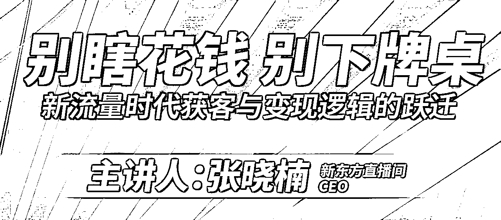
张晓楠老师是新东方直播间的CEO，带着新东方直播间从0到1，0投放持续半年，当下年度GMV10多亿。
她来是讲投放吗？不是，她来讲的是，别瞎投放.
张晓楠老师的原话：“在当下流量新渠道的环境下，广告投放犹如吞金神兽”。
这里指的不是你家里的那个小号的神兽，是商业市场上的那种巨型的广告开销，小公司动辄几十万，大公司动辄几千万，有时间丢进去最多有个响的那种。
那么她是讲不要投放吗？也不是，没有投放很难支撑新东方直播间10多亿GMV规模，平台的资源也是钱买的，不花钱也不会给你那么大体量。
张晓楠老师强调的是，要花，但是别瞎花。
这里，讲讲我对别瞎花钱的理解。
我个人也是负责投放的，近两年公司的投放都是我在管理，我们的投放，主要以小红书聚光为主，我本人也是生财有术，小红书聚光投放航海的教练，自己也有一门（还在写，未面世）关于聚光航海的课程。
前两年跟几个投放同行的朋友沟通，磨了一个选项目的三投模型。
即在当下的投放环境中，必须符合三投模型的最少一个，这个项目的投放才有可能微盈利，俗称，活着。
符合两个，可以吃饱。
符合三个，闭眼投，是的，闭眼，可以说拉条边牧过来运营都能赚钱，会摁广告开关，账户没钱会叫两声就行。
也可以总结成一句话，全方位思考如何让投放成本低于同行平均水平20%，同时转化率高于同行平均水平20%，就是我们要做的。
但是近两年，尤其是今年开始，各个平台都会卷到起飞。
怎么理解呢？
首先，平台以往有巨量的未分类流量，就会有红利，但是在算法很精准的现在，这些流量会被快速分类，精准化。
换句话说给你的价格也是精准的，精准到系统会推着你们同行之间卷价格，蓝海的赛道不是少，但是一出现很快就会杀红（我们自己蓝海赛道，小红书投放成本单粉40-50，3个月就能干到240-300）。
平台的算法就是这样，只要你投产高，不管是系统还是人工，平台会用最快的方式让你的同行感受到，然后杀进来，直到杀的血流成河，价格倍增。
平台坐收溢价价值，这是底层逻辑，是必然。
这里展开讲很长，不多叙述，有兴趣的话，大家关注留言，我后续单独出一篇讲。
这种情况下，三投模型不是无效了，而是窗口期变得很短了，短到这边投入完了还没开始盈利，可能那边就由蓝杀到红了。
而张晓楠老师讲的，让我看到了三投模型外的突破点，哪怕不在三投模型内，也是有不下牌桌的机会的。
这也是我反复回忆张晓楠老师讲的内容时，结合身边的案例做的后续总结。
我之前在做聚光航海教材的时间，对广告投放做了一个新的审视角度，叫做：广告投放不是花钱去平台买流量，而是帮助平台去卖流量。
如何找到平台赛道下低价形式的流量（进货），然后形成高价的价值（卖掉），拿到商业最基础的低买高卖，才能价值最大化。
平台的流量哪里来的？钱买的，谁帮他卖的好，谁帮他变现多，流量就是谁的，在这个过程中如果你扣点利润出来，那就是你赚的。
敲黑板，仔细看，划重点。
不是谁出价高就给谁流量，是谁变现多，算法就会把流量给谁。
出价高只是变现多的一部分，但是，另一部分呢？
曝光率转→点击率转→留存率转→互动率→下单率→GMV。
这些数据都优化到当下的最好了吗？符合高于市场平均水平20%+原理吗？
每一个转化之间的提高，都要有数个节点的优化，和N个指标的测试搭配，这些都做了吗？
你说你的标题曝光率还可以，那么有没有测试更好的标题封面？更好的标题封面可能会违规那有没有做AB测试？是否可以去尝试定位违规的线大致在什么范围？
如果只有曝光率，但是点击转留存特别差，那么用户进场后的留存应该怎么优化？
经验少，不知道？有没有拉过同行最好的20个对标来针对性分析下别人怎么解决的。
不知道什么是最好的？那就去拉100个，看多了自然就知道什么是好的。
等等，等等。
（这篇不是技术分析文，我尽量大白话讲逻辑，少分析，关于运营的分析有空单独讲。）
所以说，钱要不要花，要花。但是，别瞎花。
在很多数据没有做好之前，在你的素材没有做到高于广告出价的价值前，先别瞎花。
（你可以投放测试，但是不能无脑投）
这就是张晓楠老师讲的，别瞎花钱。
那要怎么花合适？
我们不要依靠付费广告，广告付费只是放大我们利润（结果）的工具，而不是为了成就我们的GMV。
那么除了出价，我们如何能跟同行做出正向的差异化运营？超越他们20%+？
三投模型外的突破点，优秀的团队，靠谱的人，带来的额外的生机。
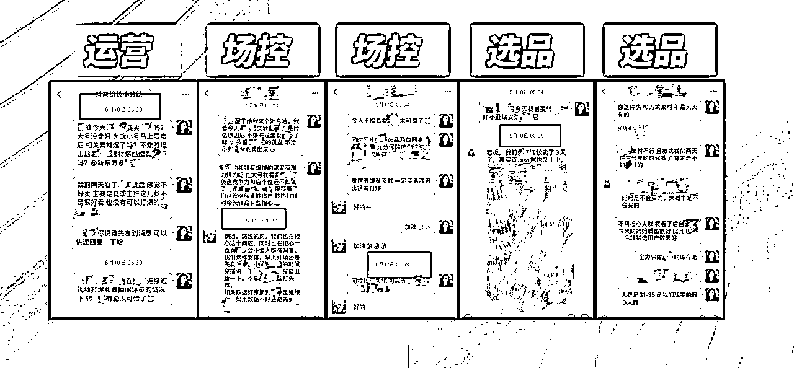
这是张晓楠老师分享的一个工作中的案例，当天上午9点左右，直播间有重要的新活动，上午5：30分张晓楠那老师群里里留言，5.51分就收到的同事的反馈，然后该同频同频，该修正修正。
当然，还有里另一个反面素材，8点多回复的同事，回复的是不一样的建议，而且当天验证了是不对的。
时间其实并不重要，它只是侧面证明了大家用心的程度。
张晓楠老师想表达的是，用心的人拿到正确结果的概率更大。
我前面举的一些例子，如何提高各个环节的数据，那些方法，那些细节，都是基操，都是可以复制的，但是优秀的团队才是你执行这些的根本。
优秀的团队可以做什么？
做别人做不到事情，赚别人赚不到钱。
我之前有一篇文章，讲我一个合伙人带的团队如何做快手电商短视频投放的。
大致就是抖音最近刚刚爆的产品，它的视频素材一定是优质的，第一时间拿到快手去投放，有不小的概率会爆，出单以后，再联系厂家发货。
这里面就有一个问题：我们这个模式，大部分情况下不能去备货，只能有了订单再去厂家，爆了的产品多是全国都爆的，会缺货，如果没货发就会亏钱。
这个时间，80%的运营就会尽量不选这类产品，而20%的运营就会想尽办法解决货源的问题。
比如带上礼物，连夜杀到生产厂家，以前都是客户是上帝，这回咱们把他当上帝，一顿沟通+马屁，本身需求量也不是很大，给你往前排几天很简单的一个事情。
因为你再当场啊，别人就算靠前，他不在啊，近水楼台先得月，不就是讲的这个而道理么？
我公司有一个业务，主要在小红书获客，做私域。
最初选择小红书这个平台，是因我们是后做这个业务的，而小红书这个平台在当时这个业务还是超蓝海，蓝到什么程度呢？可能你在抖音的获客成本已经150+了，在小红书还是在30-50左右。
当时确实是香，后来对接同行聊，跟我们同一批前后进小红书的，就算是个人做，再发展成3.5人小工作室这种小规模的，一个月也能做小几十W的利润。
但是，昙花一现，现在，我对接的同行，除了我们自己还在做，几乎没有了，可以说，十不存一。
不止是成本高了7.8倍，包括运营的动作都高了数个层级。
简单讲下我们是怎么卷的，大家就理解了。
最开始大家都是简单的笔记获客，升级点的就玩个矩阵，从几十个号到几百个号，毕竟有利润嘛，加设备什么的都是分分钟的事。
后面从矩阵素人号，卷到矩阵蓝V号，是的，600一个那种，先搞100个。
然后就是所谓免费的永远干不过付费的，从广告投放下手，直接投放，下市场，抢流量。
等大家都进广告了，市场又一轮洗牌，互相投诉，封专业号，当时手里没有几十个开过户的专业号和各种做笔记、过审核的手段，基本上是玩不转的。
从个人号，到专业号投放矩阵，升了几个维度，可以看到的是，在当下的环境，只靠红利，几乎是不可能维持不下牌桌的。
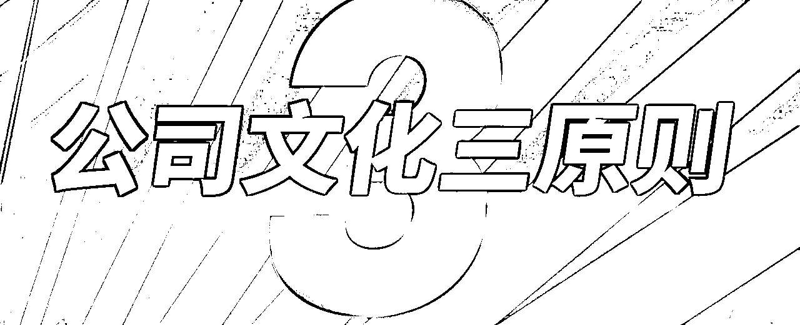
这些例子有很多，大家在运营的过程中每个人都会遇到。
这次张晓楠老师讲的，把这些解决问题的思考作为公司文化，拥有靠谱的团队，才是不下牌桌的关键。
“never say never”
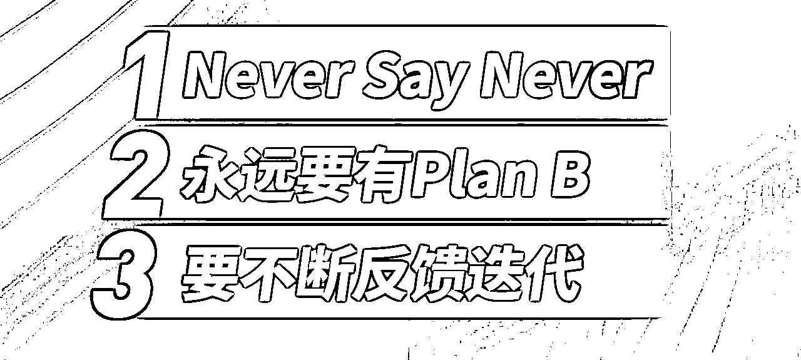
拥有在“never say never”原则下，“配合PlanB的计划”，“持续迭代”的团队的公司才能有资格，不下牌桌。
张晓楠老师分享的，不瞎花钱的投放策略，和不下牌桌的企业文化，正是当下带领大家破局的，必修课。
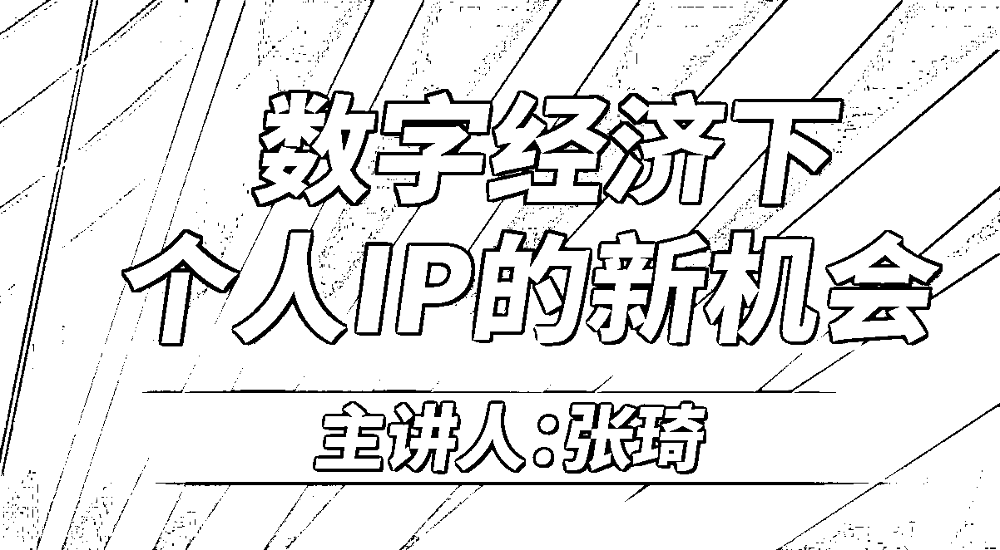
张琦老师算是抖音老师里面比较接地气的老师了，
我记得有段时间刷到张琦老师的视频以后，乌泱泱的刷到一大堆，当时是真的挺震撼的，这是什么流量级别，无脑推，还是很凶的那种。
不过站在运营的角度思考，她的模式，她的运营价值，和当时的平台策略，都是很值得学习的。
张琦老师的分享没有那么尖锐，很综合多元，很实际，比较适合帮助初做个人IP的朋友们解惑。
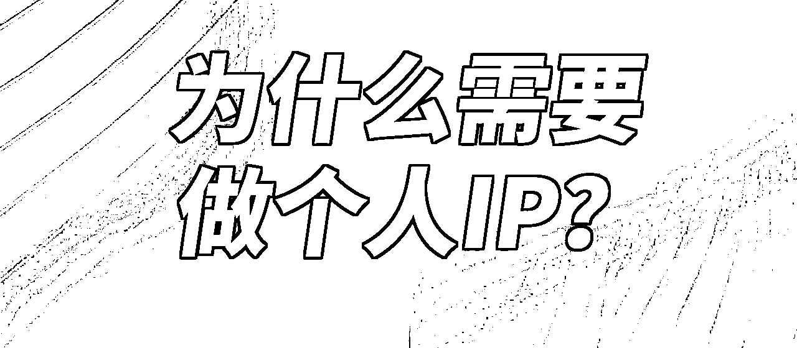
在当下，这个问题有很多答案。时代的趋势，红利，等等，这些说法都很正确，但是又很笼统。
我相信参会的大多数人都是思考过这个问题的，因为本身多是做个人IP，或者是希望做IP的人。
这里有个人影响力IP，有知识IP，有流量IP，创始人IP，等等，其实大家都是希望用IP所产生的影响力，来解决当下创业过程中的部分问题。
比如知识IP可以变现，解决现金流问题。
赫畅老师分享里，他的知识IP，就解决了不少现金流的问题。
比如个人影响力IP可以创造势能，对接高价值资源。
哪怕是一个小的垂类IP也可能给你带来很多价值。
我们做shopee培训时，很多当地的机构都会找我们去讲课，主动分佣。
很多的付费资源，大家都是免费交换来的。
比如创始人IP可以更加高效的凝聚团队，解决部分管理问题。
IP就是公司核心的一部分，创始人就是这个IP，深度绑定，切换一个维度，不但解决了公司影响力问题，还很大程度上解决的公司管理问题。
而流量IP自己本身就是资源，得流量者得天下嘛。
是的，当你想做一个IP的时候，一定是一个IP可以在不同程度上解决了你的问题。
我觉得这才是为什么要做IP的原动力。
大家可先想想，如果你做IP，哪怕是一个小一点的IP，可以帮你解决什么问题呢？
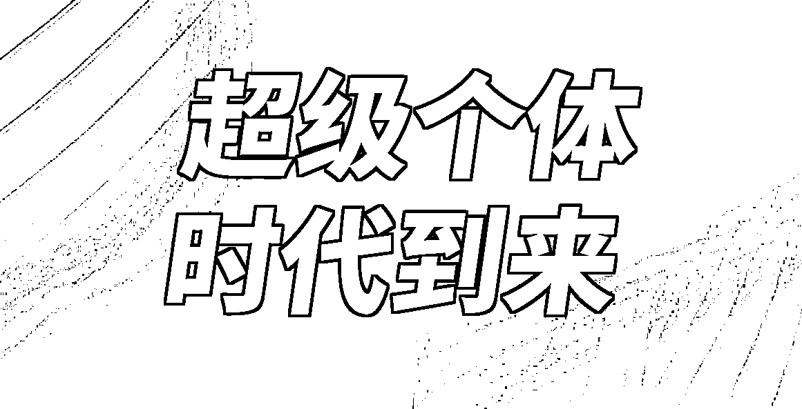
未来，个人IP会是一个很普通的东西。
因为每个人都希望拥有影响力，这几乎成为了当下文化的本能需求。
而数字社会，无限的放大了这个可能。你可以从任何角度去建设你的IP，你只需要记录。
当代的用户，比如不少年龄30+的人群，在公共平台记录生活可能还会有惰性，因为那需要做额外的动作，费时又费力。
但是以后的年轻人，记录个性，记录独一无二的生活本来就是生活的一部分，他们是数字社会的原住民，AI的工具也会更加的简化整个过程，以前或许需要一个团队的动作，以后一个人就可以搞定，就像以往写日记，发微博，发朋友圈，在公共平台记录自己，将不会在成为额外的工作，而是兴趣个性使然，谁会为兴趣惰性呢？
因为价值越来越大，成本越来越低，所以这大量产生超级个体的时代。
为什么说张琦老师是多元讲解？张琦老师分享了这个问题。
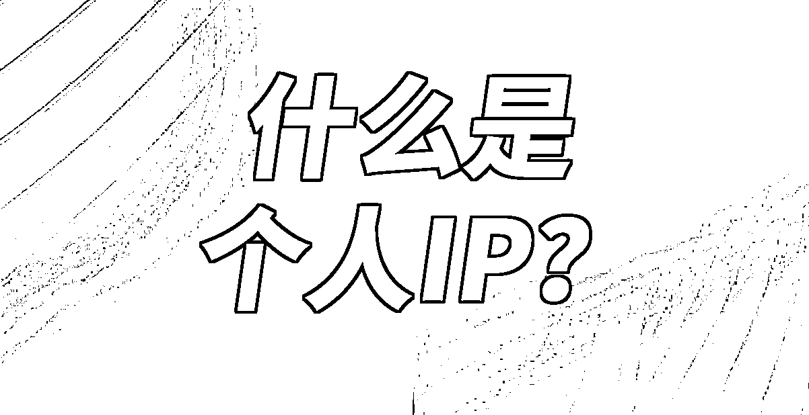
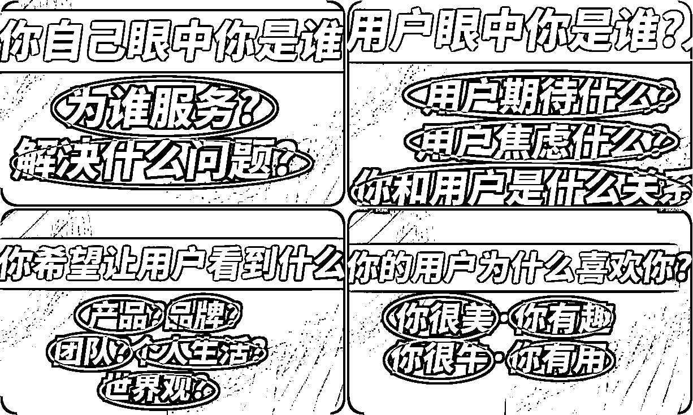
张琦老师想告诉大家的是，所有的画圈的这些，你哪怕想清楚一个，甚至以上的都没有，你的个性，你的技能，就像以前有人剃头，有人蒸馒头，不管大小事，只要你为特定的人群解决了具体的问题，创造了价值，都可以以此成为IP。
还是那句话，因为“每个人的经历，都可以成为照亮自己未来道路的燃料，如果照亮了更多的人，就可以成为知识IP。”
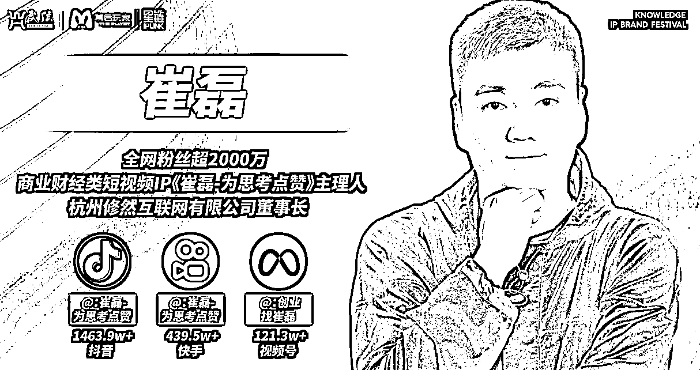
崔磊老师的分享，也是他自己做内容绝招，分享很细致，他尽可能用拆解思维来表达他的分享。
可能是怕我们不懂，他拆解了数个案例，但是就只讲了一件事《流量的关键：社会情绪》。
同时告诉我们，要站在正反两个角度去看问题，看事件，然后从正反两面去找到优势于我们价值的社会情绪，针对这些社会情绪做内容，这就是内容爆款的核心，妥妥的矛盾论实践者，这里给崔磊老师先点个赞。
提炼正反观点下的情绪价值，用内容迎合这些情绪价值，就会获该热度下用户的流量支持。
这里有一个误区，不要理解为，那就是顺着双方的观点说呗，你说天是蓝的我说对，你说天是黑的我也支持。
不是的，刚才我们有强调，提炼，价值，而不是无脑的附和，在天是蓝的的观点下，或许是因为所处的环境是万里晴空，碧海蓝天。在天是黑的观点下，或许是乌云密布的夜晚。
矛盾论告诉我们，万事万物都有正反两面。我们要善于提炼，把相关观点下的深层价值给挖出来，形成内容，这样就能最大化的与该观点下的用户形成共鸣，从而抓住流量用户的注意力，获得对用户流量的影响力。
这样既结合热点事件，又帮助用户的观点找到支撑点，和情绪价值的内容，当然成为爆款的概率会大很多。
崔磊老师分享了数个案例，这里我们选“萝卜快跑”相关的热点，与大健康行业结合的一个案例学习下。
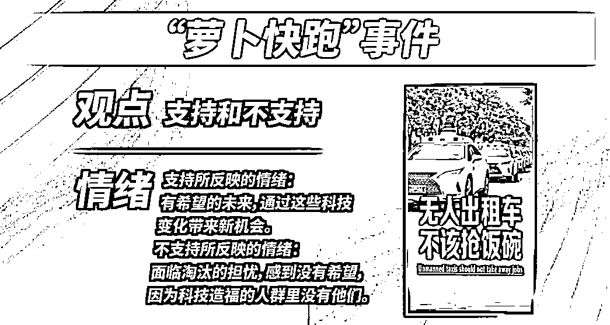
上图是热点下提炼出的，关于支持和不支持情绪锚点。
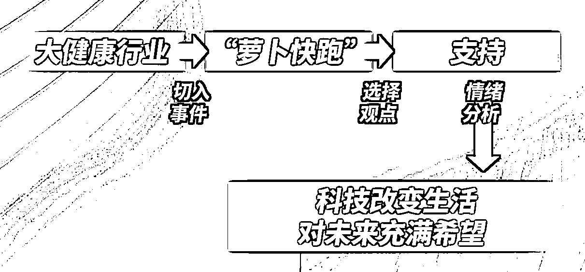
以大健康行业切入“萝卜快跑”的热点，针对支持的观点，做大健康行业的内容话题。
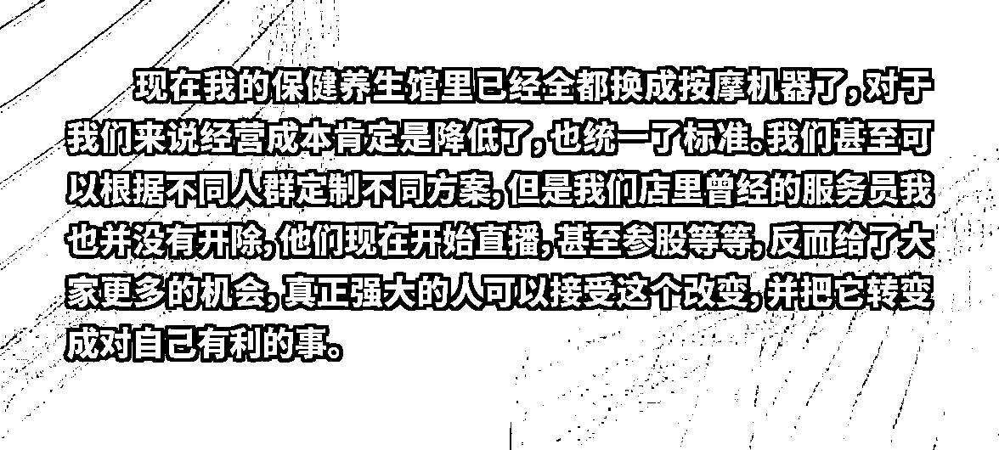
既表明了支持方的立场，支持科技改变生活，创造更多价值的观点。
又照顾了不支持立场的情绪，告诉大家不会用淘汰人的方式安排工作，不但不会用淘汰人，而是高效的使用的人的价值，做机器不能做的事情，顺便还可以给自己做一波招商加盟的广告。
沟通点是，科技不单单是造福一方的人群，只要合适的使用科技，是可以造福大家的。
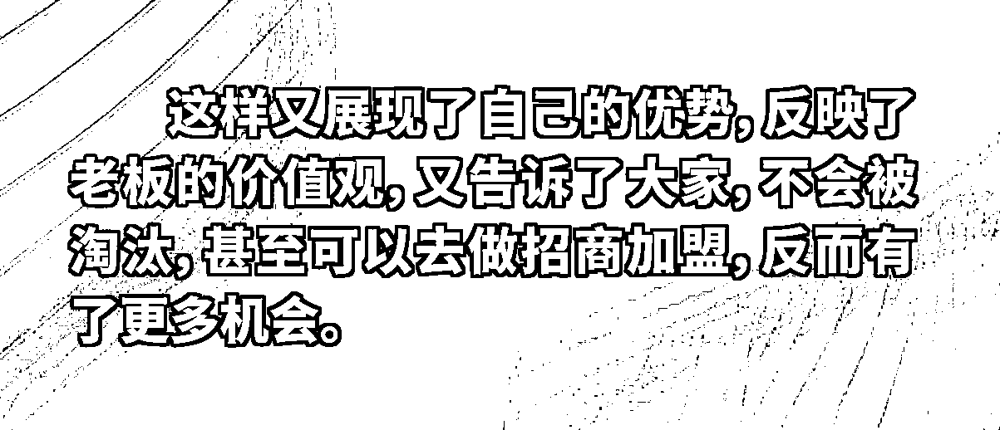
流量等于热点事件，热点事件又包含了很多不同的观点，每种观点都是由用户的情绪支撑的，如果把用户对事件的情绪与自己想要的流量相结合，就找到了写爆款文案的核心点。
因为你要先让别人认可你，别人才会听你说什么。
尤其是大众用户，你凭什么指望用一篇内容去改变别人几十年的价值观呢？
我们应该找到用户观点情绪的支撑点，了解，理解，顺应，再结合。
我们就叫它内容语言艺术把，俗称，把一件事抡圆了说，全是价值，没有破绽。
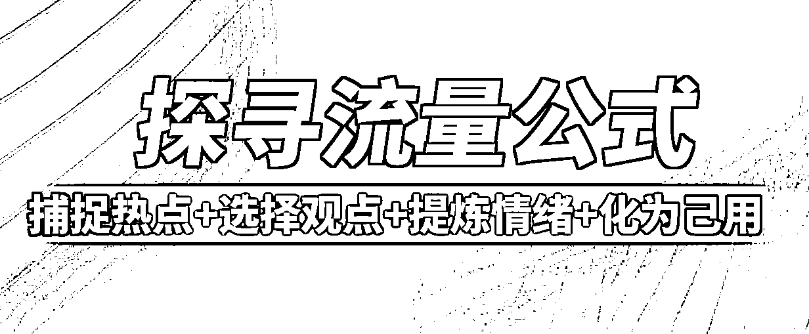
作为投资人中的段子手，他真的就是来讲段子的。
嗯，至少他的PTT是这样的做的。
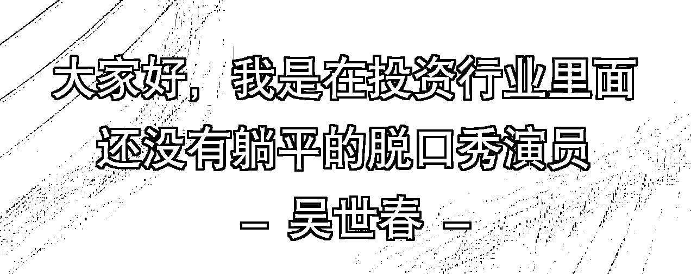
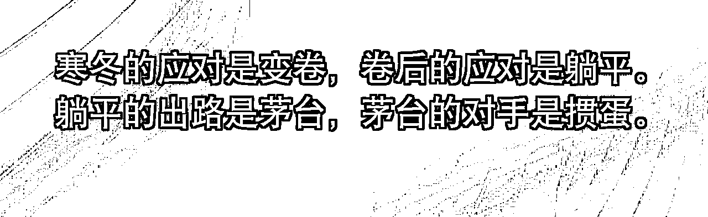
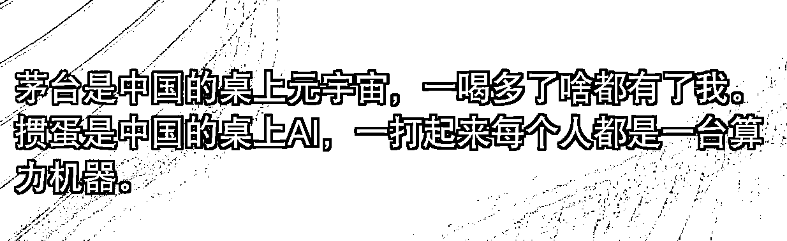
吴世春老师只讲了段子，没讲其他，段子我就不抄了，我就来讲讲我的感受把。
作为创业者，会面对很多压力，很多时候，心态好了，事情才能做好，很多时候，笑一笑，真的能解决很多问题。
（我用很多个很多来表示，真的是很多时候。）
每个创业者每个月都有那么几天，情绪低落，思绪混乱，几乎没有工作状态。
我自确实是这样。
最早一到那几天，我硬抗，我对抗，我加班，我投降，然后打游戏或者发呆，总之在耗。
后来我发现，放开事情和业务的状态，去休息一下，喝一杯，看个电影，找朋友聊聊天，约老婆/女友浪漫一下，都可以，重要的是笑一笑，放松一下，去感受愉悦的事情。
然后那个生龙活虎，充满激情的我，又回来了。
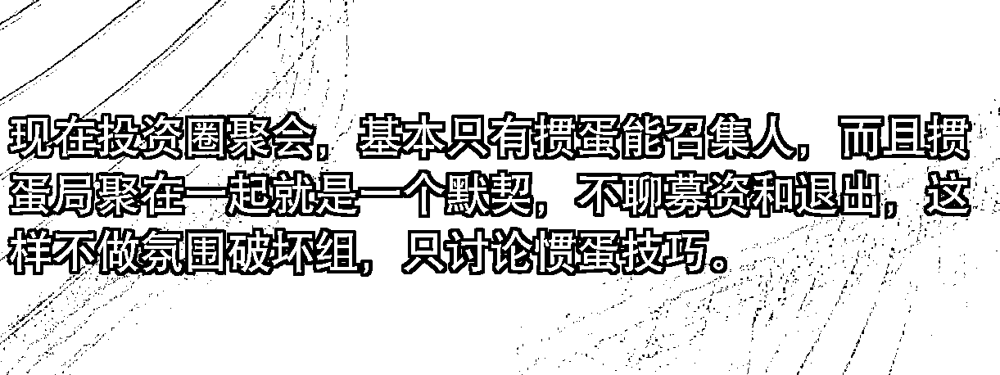
是的，面对压力时，我们要轻装上阵。
我们不是不懂道理，也不是不知道怎么做正确的选择，只是创业本身就是反人性的，在缺少激情的状态下，就是很难做出违反感性的抉择。
无论是你面对长期主义目标的妥协时，还是因为大目标，面对家人同事的不理解时。
所以，找个合适自己的方法，奖励自己一下，笑一笑，然后轻装上阵，这很重要。
最后，感谢耐心读到这里的各位，如果觉得有收获，还请回到生财社群点个赞，如果需要交流，可以直接在生财的评论区评论即可，看到我就会回的。
张琦老师：不论你是修鞋的，还是洗衣的，亦或是富二代，不管你是美，还是很牛。
张晓楠老师：只要你拥有“never say never”的原则，不下牌桌的理念，都可以成为你赛道的个人IP。
赫畅老师：因为每个人的经历，既然可以照亮未来的自己，也一定可以照亮更多的别人。
崔磊老师：同时，我们一定要学会多个角度看问题，有正就有反，有认同，就有不认同，提炼多角度的社会情绪价值，把用户对事件的情绪与自己想要的流量相结合，才是抓住流量的高级心法。
吴世春老师：当然，最重要的，我们要笑，要放松，要让快乐带我们找到那个充满激情的自我。
本文所有的图片都是在互联网或线下公开过的图片，如果侵权请通知，将会第一时间删除。